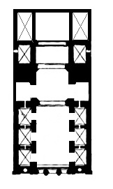

W Polsce pierwszą placówką Karmelitów Bosych był klasztor pod wezwaniem Poczęcia Najświetniejszej Marii Panny przy ulicy Kopernika. Fundacje otrzymali oni 28.11.1605 roku od Macieja Pstrokonskiego (biskupa przemyskiego), który zakupił dla nich nalezacy do Jadwigi z Debian Padniewskich (kasztelaowej oswiemciskiej) ogród położony za brama Mikolajska.
Na posesji były stawy oraz dwa zrujnowane budynki. Akt darowizny i zapis miał miejsce 3 grudnia 1605 roku, natomiast uroczyste przejęcie majątku odbyło się 7 grudnia tego samego roku - w wigilie Niepokalanego Poczęcia Najświetniejszej Maryji Panny. Co skłoniło karmelitów aby to właśnie jej poświęcić klasztor. Położony miedzy rzekami Promnikiem i Wisłą, a brama miasta Krakowa ogród miał kształt czworokąta. Pierwszy kościół zbudował Karmelita na w trzy miesiące pochodzący z Bolonii Wawrzyniec Justimonti w ramach podzięki za swoje cudowne uzdrowienie ze śmiertelnej choroby. Kościół miał wymiary 7 na 14 metrów, natomiast portyk wejściowy miał 3 metry. Po prawej stronie kościoła stał drewniany budynek klasztoru, którego wejście było od strony północnej. Budynek na parterze miał oficyna, a na piętrze znajdowały się cele klasztorne, oratorium, biblioteka i chór. Stawy w ogrodzie były wypełniane za pomocą wodociągów wodą z rzeki Promnik. Kościół został uroczyście poświęcony dnia 28 października 1606 roku przez fundatora działki biskupa Macieja Pstrokonskiego, tego samego dnia odbyła się w nim pierwsza Msza św. Klasztor stał się kolebka Prowincji Polskiej i Litewskiej Karmelitanow Bosych. Założony w nim nowicjat funkcjonował do roku 1787.
Niestety niekorzystne warunki sprawiały ze nowicjusze często chorowali na malarie i młodo umierali. Rzeki często wylewały i zalewały piwnice i oficyny, a znajdujące się w pobliżu stawy jeszcze bardziej zwiększały wilgotność. Z tego powodu fundacja została przeniesiona na wzgórze przyległe do Ogrodu Wolskiego. Marszałek koronny Mikołaj Wolski podarował w 1626 część ogrodu Ojcom Karmelitanom, została ona przeznaczona pod budowę nowego kościoła. Ponadto żona chorążego królewskiego Eufrozyna Sieniawska Chodkiewiczówna zapisała dla klasztoru część majątku Suderynowskiego z ogrodem i budynkami w Przemyslu, a potem także domy i place strzelnicy w Krakowie. Kolejnym ofiarodawcą był Gaspar Mikołaj Bokowski, który odstąpił Kramelitanom druga część majątku Suderynowskiego.
Po uzyskaniu gruntów Karmelitanie Bosi skierowali prośbę o zezwolenie na budowę nowego murowanego kościoła oraz klasztoru do króla Władysława IV, który wyraził zgodę oraz zatwierdził plany 3 maja 1633 r.
Pierwszy kamień węgielny został położony już w 1634 r, nadal zbierano jednak fundusze na ten cel. W 1649 r wyrównano teren pod budowę, natomiast rok później rozpoczęto prace budowlane. Z powodu potopu szwedzkiego i szczupłych dochodów karmelitanów trwały one dość długo, w 1680 r ukończono wieże przy stronie prezbiterium, a w 1682 budowę całości kościoła. Świątynia została konsekrowana przez biskupa Mikołaja Oborskiego dnia 16 maja 1683
Kościół uległ znacznemu zniszczeniu podczas Konfederacki Barskiej w 1772r. Dzięki pomocy innych klasztorów udało się go odrestaurować w latach 1780- 1782. Kilka lat później Michał Poniatowski ówczesny prymas Polski zdecydował, aby do klasztoru przenieść szpital, który znajdował się w kamienicy przy kościele św Barbary. 30 sierpnia 1787 r. podpisano w Warszawie „Akt Ugody”. Klasztor po stosownej przebudowie został zajęty przez szpital poświęcony pod wezwaniem św. Łazarza i przyłączony do prowadzonego przez Siostry Miłosierdzia Szpitala Akademickiego. Od tego czasu świątynia potocznie nazywana jest kościołem św. Łazarza, jednak jest to nazwa nieprawidłowa.
XX-wieczne remonty
1913 - pod kierunkiem Władysława Turskiego odnowiono fasadę oraz nakryto dach dachówką a hełmy wież blachą cynkową.
1981 - została odnowiona elewacja wież.
1982 nowe tabernakulum wykonał Antoni Oremus.
1987-1988 – prace konserwatorskie we wnętrzu kościoła pod kierunkiem Mieczysława Świerczeskiego
1989 - remont fasady i murów przy kościele
1990 – generalny remont organów
1994 – zmiana dachówki oraz pokrycie wież miedziana blachą
XX-wieczne remonty
1913 - pod kierunkiem Władysława Turskiego odnowiono fasadę oraz nakryto dach dachówką a hełmy wież blachą cynkową.
1981 - została odnowiona elewacja wież.
1982 nowe tabernakulum wykonał Antoni Oremus.
1987-1988 – prace konserwatorskie we wnętrzu kościoła pod kierunkiem Mieczysława Świerczeskiego
1989 - remont fasady i murów przy kościele
1990 – generalny remont organów
1994 – zmiana dachówki oraz pokrycie wież miedziana blachą
Kościół został wybudowany w stylu barokowym. Jako surowce do budowy użyto przede wszystkim cegłę i kamień. Budynek posiada większą centralną trzyprzęsłową nawę pośrodku otoczona przez dwa szeregi kaplic. Ściany zostały podzielone korynckimi pilastrami z bogatym gzymsem koronującym (ząbki, wole oczka, kostki). Natomiast sklepienie podwójnymi gurtami. Nawa ma szerokość 7.75 metra oraz długość 19,5 m. Po obu bokach nawy znajdują się 4 boczne kaplice. Łuki kaplic ozdobiono sztukaterią figuralną z główkami aniołków. W dolnej kondygnacji umieszczono gipsowe statuy pięciu apostołów: Piotra, Pawła, Tomasza, Szymona oraz Filipa. Sklepienia kolebkowe przyozdobione zostały sztukaterią różnych figur geometrycznych: gwiazd, kwadratów, rombów, kół oraz trójkątów. Świątynia posiada 11 półokrągłych okien w lunetach. Prezbiterium oddzielono od nawy balustrada tralkową z czarnego marmuru ozdobioną inkrustracją z różowego marmuru w filarkach. Dwuprzęsłowe prezbiterium jest zamknięte prosta ścianą i umieszczone dwa stopnie wyżej od nawy kościelnej. Jego szerokość wynosi 8,6 m, a długość 12 m. Zachowała się do dzisiaj zabytkowa biało-czarna marmurowa posadzka. Pod prezbiterium jest krypta grobowa w której dawniej chowano zakonników.
Zdjecia

Fasada typu del Gesu jest uproszczona i zmodyfikowana w kościołach karmelitańskich wg projektu zrealizowanego przy budowie kościoła Santa Maria della Scala w Rzymie przez Francisco da Voltera.
Fasada budynku jest dwukondygnacyjna, trójprzęsłowa i bezwizowa. W środkowym przęśle na osi dolnej kondygnacji znajduje się prostokątny portal z profilowanym kamiennym obramowaniem. Dwie kolumienki z kapitelami jońskimi i festonami wykonane z piaskowca flankują portal utrzymując belkowanie z półokrągłym przyczółkiem w którego narożach umieszczone są kule z promieniami. Pod nim znajduje się herb karmelitański i prostokątne okna.
W bocznych przęsłach znajdują się po dwie spiętrzone głębokie nisze. Kondygnacja górna jest węższe i niższa. W polu środkowym znajduje się duże okno zwieńczone arkadą z przerwanym przyczółkiem. Pomiędzy ramionami przyczółka znajduje się sklepiona nisza z figurą Dzieciątka Jezus. Całość została zwieńczona trójkątnym szczytem z rzeźbą Madonny Niepokalanej, w narożnikach natomiast umieszczono statuami Teresy z Avila oraz Jana od Krzyża.
Elewację szczytu prezbiterium zostały oflankowane przez dwie wieże, które w kondygnacji dolnej są czworoboczne, a w górnej ośmioboczne zaś zakończone są latarniami. Nowe wieże barkowe zostały wzniesione przez Jakuba Harste w 1752 r., przebudowano je w XIX w.
Zdjecia
Kościół posiada bogate w artystyczny wystrój wnętrze składające się z: siedmiu ołtarzy, balustrad tralkowych w bocznych kaplicach i w prezbiterium z czarnego marmuru dębickiego.
Dwuplanowy ołtarz główny jest dedykowany Maryi Niepokalanej. Wewnątrz prezbiterium znajduje się mensa z tabernakulum i tronem w kształcie świątyńki z kopuła, a także dwie boczne bramki z kolumienkami i rzeźbami śś Piotra i Pawła. Bazy kolumn, a także korynckie kapitele i inkrustacje w obramieniach oraz płaszczyznach cokołów zostały wykonane z różowego marmuru. W bocznych portalach usytuowane są figury proroka Eliasza oraz św. Alberta Wielkiego. Na ramionach przerwanych przyczółków są rzeźby aniołków, a na szczycie kopułki znajduje się pelikan z pisklętami. Przy ścianie w głębi umieszczona jest dwukondygnacyjna nastawa ołtarzowa. Na górze jest obraz Matki Bożej z napisem „Regina sine labe concepta”.
W skrzydłach bocznych ołtarzowej nawy znajdują się kompozycje malarskie przedstawiające św. Jana Chrzciciela i św. Jana Ewangelistę, a w narożach przyczółka znajdują się rzeźby świętych trzymających tarcze w rekach. W górnej kondygnacji zwieńczonej przerywanym przyczółkiem z medalionem na środku umieszczona jest figura Chrystusa. Przed nastawą , za mensą ołtarza znaleźć można drewniane stale i XVII-wieczne polichromie. W otwartych do nawy czterech bocznych kaplicach znajdują się takie same marmurowe ołtarze. W nadstawie mają kolumny z kapitelami jońskimi flankującymi obraz zwieńczony arkada i podtrzymują belkowanie z przerywanym przyczółkiem. W środku przyczółka znajduje się nasadnik z obrazem w owalu z krzyżem na szczycie. Dwie mniejsze kaplice znajdują się po bokach prezbiterium z niedużymi ołtarzykami poświeconymi św. Józefowi i Matce Bożej Niepokalanej od Cudownego Medalika. Na ścianie bocznej w prezbiterium umieszczony jest ołtarz św. Judy Tadeusza, a po drugiej stronie obraz Chrystusa Ukrzyżowanego. Po lewej stronie za ołtarzem jest dawna zakrystia w której pozostał marmurowy lawetarz, a po prawej kaplica, w której znajduje się ołtarz św. Stanisława Kostki oraz chrzcielnica. Znajduje się tu również przejście do dawnego klasztoru. Ośmiogłosowe drewniane organy powstałe w XVII-XVIII z fragmentami dekoracji umieszczone są przy północnej ścianie świątyni.

Zdjecia
Barabasz R.,"Historia kościoła Niepokalanego Poczęcia Najświętszej Maryi Panny (św. Łazarza) w Krakowie", Instytut Teologiczny Księży Misjonarzy, Kraków 1997.
Gondkowa B., Rożek M., "Leksykon kościołów Krakowa", Verso, Kraków 2003
Klein F., "Barokowe kościoły Krakowa", Rocznik Krakowski, T. XV (15): 1913, s. 97-204
Gondkowa B., Rożek M., "Leksykon kościołów Krakowa", Verso, Kraków 2003
Klein F., "Barokowe kościoły Krakowa", Rocznik Krakowski, T. XV (15): 1913, s. 97-204